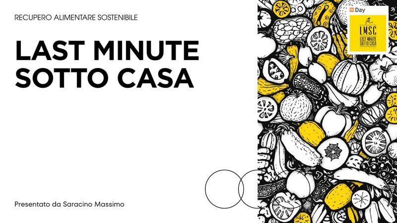
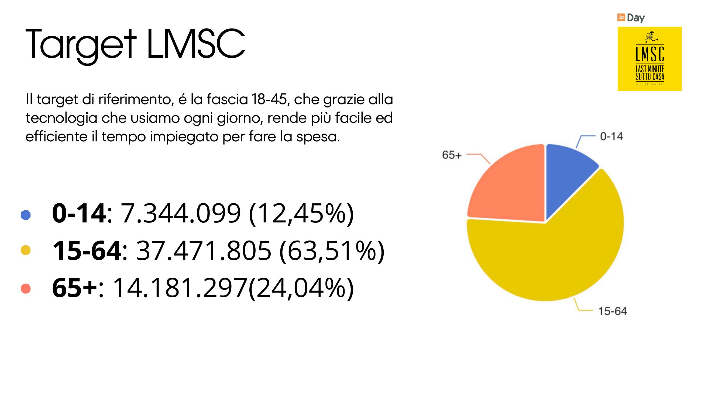

Il progetto
LMSC (Last Minute Sotto Casa) nasce dall'esigenza di contrastare lo spreco alimentare, un problema che cresce insieme alla produzione: ogni anno in Italia vengono sprecate circa 5 milioni di tonnellate di alimenti, per un valore stimato di 13 miliardi di euro e 554 grammi di spreco pro capite.
La mission del servizio è creare un ponte tra due esigenze opposte: da un lato gli esercenti, che vogliono ridurre la merce invenduta prima della scadenza; dall'altro i consumatori, che possono acquistare prodotti di qualità in scadenza a un prezzo scontato.
In questa prima fase del progetto ho definito il concept, la mission e un primo inquadramento del target, base di partenza per le fasi successive di ricerca e progettazione.

Uno sguardo al dettaglio
Analisi del target di riferimento: la fascia 15-64 anni rappresenta la quota più ampia di potenziali utenti, un dato che ha guidato le prime scelte di posizionamento del servizio.